Exemples de recherche d'images
Comment lirePour chaque base : le meilleur modèle, deux requêtes tirées de la classe la plus facile et deux de la classe la plus difficile. Bordure verte = même classe que la requête, rouge = autre classe. d = distance à la requête.
Corel-1K – ResNet-50
Classe facile : « elephants » (AP = 1.000)
Requête #508 – classe elephantsrequête elephants
d=0.095 elephants
d=0.099 elephants
d=0.110 elephants
d=0.110 elephants
d=0.122 elephants
d=0.131 elephants
d=0.142 elephants
d=0.147 requête elephants
d=3.144 elephants
d=3.216 elephants
d=3.375 elephants
d=3.400 elephants
d=3.660 elephants
d=3.662 elephants
d=3.798 elephants
d=3.863
cosinus
8/8 pertinentes
8/8 pertinentes
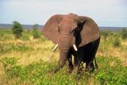
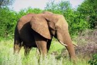
d=0.095
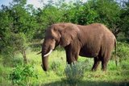
d=0.099
d=0.110
d=0.110
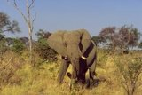
d=0.122
d=0.131
d=0.142
d=0.147
euclidienne
8/8 pertinentes
8/8 pertinentes
d=3.144
d=3.216
d=3.375
d=3.400
d=3.660
d=3.662
d=3.798
d=3.863
Requête #577 – classe elephantsrequête elephants
d=0.165 elephants
d=0.165 elephants
d=0.170 elephants
d=0.170 elephants
d=0.174 elephants
d=0.176 elephants
d=0.181 elephants
d=0.190 requête elephants
d=4.490 elephants
d=4.504 elephants
d=4.570 elephants
d=4.593 elephants
d=4.680 elephants
d=4.707 elephants
d=4.721 elephants
d=4.804
cosinus
8/8 pertinentes
8/8 pertinentes
d=0.165
d=0.165
d=0.170
d=0.170
d=0.174
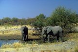
d=0.176
d=0.181
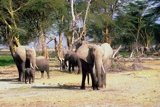
d=0.190
euclidienne
8/8 pertinentes
8/8 pertinentes
d=4.490
d=4.504
d=4.570
d=4.593
d=4.680
d=4.707
d=4.721
d=4.804
Classe difficile : « africans » (AP = 0.766)
Requête #43 – classe africansrequête africans
d=0.284 africans
d=0.325 africans
d=0.339 africans
d=0.344 africans
d=0.350 africans
d=0.364 africans
d=0.372 africans
d=0.384 requête africans
d=11.066 africans
d=11.119 africans
d=11.463 africans
d=11.622 africans
d=11.732 africans
d=11.796 africans
d=11.979 africans
d=12.120
cosinus
8/8 pertinentes
8/8 pertinentes
d=0.284
d=0.325
d=0.339
d=0.344
d=0.350
d=0.364
d=0.372
d=0.384
euclidienne
8/8 pertinentes
8/8 pertinentes
d=11.066
d=11.119
d=11.463
d=11.622
d=11.732
d=11.796
d=11.979
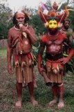
d=12.120
Requête #99 – classe africansrequête africans
d=0.220 africans
d=0.290 africans
d=0.296 africans
d=0.313 africans
d=0.316 africans
d=0.336 africans
d=0.339 africans
d=0.341 requête africans
d=10.776 africans
d=11.509 africans
d=11.630 africans
d=12.074 africans
d=12.240 africans
d=12.510 africans
d=12.592 africans
d=12.694
cosinus
8/8 pertinentes
8/8 pertinentes
d=0.220
d=0.290
d=0.296
d=0.313
d=0.316
d=0.336
d=0.339
d=0.341
euclidienne
8/8 pertinentes
8/8 pertinentes
d=10.776
d=11.509
d=11.630
d=12.074
d=12.240
d=12.510
d=12.592
d=12.694
CIFAR-100 (test) – ResNet-50
Classe facile : « motorcycle » (AP = 0.504)
Requête #4869 – classe motorcyclerequête motorcycle
d=0.255 motorcycle
d=0.258 motorcycle
d=0.261 motorcycle
d=0.264 motorcycle
d=0.267 motorcycle
d=0.272 motorcycle
d=0.272 motorcycle
d=0.273 requête motorcycle
d=11.043 motorcycle
d=11.098 motorcycle
d=11.210 motorcycle
d=11.268 motorcycle
d=11.420 motorcycle
d=11.433 motorcycle
d=11.474 motorcycle
d=11.526
cosinus
8/8 pertinentes
8/8 pertinentes
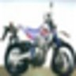
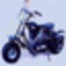
d=0.255
d=0.258
d=0.261
d=0.264
d=0.267
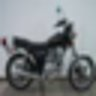
d=0.272
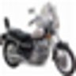
d=0.272
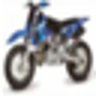
d=0.273
euclidienne
8/8 pertinentes
8/8 pertinentes
d=11.043
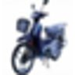
d=11.098
d=11.210
d=11.268
d=11.420
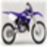
d=11.433
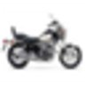
d=11.474
d=11.526
Requête #4808 – classe motorcyclerequête motorcycle
d=0.178 pickup_truck
d=0.195 lawn_mower
d=0.207 motorcycle
d=0.216 lawn_mower
d=0.218 motorcycle
d=0.231 lawn_mower
d=0.231 motorcycle
d=0.232 requête motorcycle
d=7.626 pickup_truck
d=7.977 lawn_mower
d=8.267 motorcycle
d=8.287 lawn_mower
d=8.390 lawn_mower
d=8.489 lawn_mower
d=8.611 lawn_mower
d=8.701
cosinus
4/8 pertinentes
4/8 pertinentes
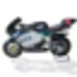
d=0.178
d=0.195
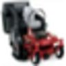
d=0.207
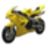
d=0.216
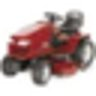
d=0.218
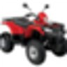
d=0.231
d=0.231
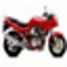
d=0.232
euclidienne
2/8 pertinentes
2/8 pertinentes
d=7.626
d=7.977
d=8.267
d=8.287
d=8.390
d=8.489
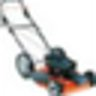
d=8.611
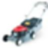
d=8.701
Classe difficile : « seal » (AP = 0.052)
Requête #7209 – classe sealrequête seal
d=0.235 whale
d=0.257 whale
d=0.259 shark
d=0.264 whale
d=0.282 seal
d=0.299 whale
d=0.300 turtle
d=0.306 requête seal
d=10.488 whale
d=10.763 whale
d=11.043 whale
d=11.195 whale
d=11.476 whale
d=11.627 seal
d=11.760 whale
d=11.775
cosinus
2/8 pertinentes
2/8 pertinentes
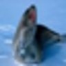
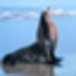
d=0.235
d=0.257
d=0.259
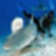
d=0.264
d=0.282
d=0.299
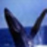
d=0.300
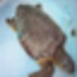
d=0.306
euclidienne
2/8 pertinentes
2/8 pertinentes
d=10.488
d=10.763
d=11.043
d=11.195
d=11.476
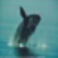
d=11.627
d=11.760
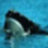
d=11.775
Requête #7252 – classe sealrequête crocodile
d=0.245 kangaroo
d=0.248 squirrel
d=0.252 otter
d=0.254 lizard
d=0.256 squirrel
d=0.256 crocodile
d=0.257 crocodile
d=0.260 requête crocodile
d=10.889 fox
d=10.950 otter
d=11.103 squirrel
d=11.148 crocodile
d=11.162 squirrel
d=11.184 shrew
d=11.226 kangaroo
d=11.251
cosinus
0/8 pertinentes
0/8 pertinentes
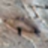
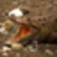
d=0.245
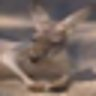
d=0.248
d=0.252
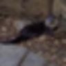
d=0.254
d=0.256
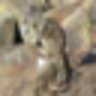
d=0.256
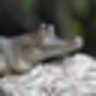
d=0.257
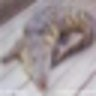
d=0.260
euclidienne
0/8 pertinentes
0/8 pertinentes
d=10.889
d=10.950
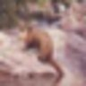
d=11.103
d=11.148
d=11.162
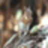
d=11.184
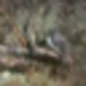
d=11.226
d=11.251
Paris6k – ResNet-50
Classe facile : « moulinrouge » (AP = 0.580)
Requête #3068 – classe moulinrougerequête moulinrouge
d=0.100 moulinrouge
d=0.105 moulinrouge
d=0.113 moulinrouge
d=0.116 moulinrouge
d=0.118 moulinrouge
d=0.118 moulinrouge
d=0.128 moulinrouge
d=0.129 requête moulinrouge
d=5.041 moulinrouge
d=5.064 moulinrouge
d=5.180 moulinrouge
d=5.294 moulinrouge
d=5.382 moulinrouge
d=5.519 moulinrouge
d=5.667 moulinrouge
d=5.788
cosinus
8/8 pertinentes
8/8 pertinentes
d=0.100
d=0.105
d=0.113
d=0.116
d=0.118
d=0.118
d=0.128
d=0.129
euclidienne
8/8 pertinentes
8/8 pertinentes
d=5.041
d=5.064
d=5.180
d=5.294
d=5.382
d=5.519
d=5.667
d=5.788
Requête #3080 – classe moulinrougerequête moulinrouge
d=0.256 moulinrouge
d=0.257 moulinrouge
d=0.260 moulinrouge
d=0.261 moulinrouge
d=0.261 moulinrouge
d=0.263 moulinrouge
d=0.267 moulinrouge
d=0.268 requête moulinrouge
d=9.490 moulinrouge
d=9.535 moulinrouge
d=9.543 moulinrouge
d=9.580 moulinrouge
d=9.853 moulinrouge
d=9.941 moulinrouge
d=9.953 moulinrouge
d=9.968
cosinus
8/8 pertinentes
8/8 pertinentes
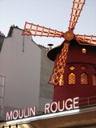
d=0.256
d=0.257
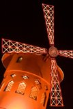
d=0.260
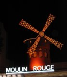
d=0.261
d=0.261
d=0.263
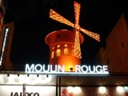
d=0.267
d=0.268
euclidienne
8/8 pertinentes
8/8 pertinentes
d=9.490
d=9.535
d=9.543
d=9.580
d=9.853
d=9.941
d=9.953
d=9.968
Classe difficile : « eiffel » (AP = 0.114)
Requête #456 – classe eiffelrequête general
d=0.298 general
d=0.333 general
d=0.336 general
d=0.342 pantheon
d=0.346 eiffel
d=0.349 general
d=0.350 eiffel
d=0.351 requête general
d=10.341 general
d=10.415 pantheon
d=10.433 
eiffel
d=10.518 general
d=10.518 general
d=10.530 eiffel
d=10.594 general
d=10.610
cosinus
2/8 pertinentes
2/8 pertinentes
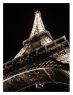
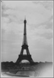
d=0.298
d=0.333
d=0.336
d=0.342
d=0.346
d=0.349
d=0.350
d=0.351
euclidienne
2/8 pertinentes
2/8 pertinentes
d=10.341
d=10.415
d=10.433
d=10.518
d=10.518
d=10.530
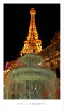
d=10.594
d=10.610
Requête #495 – classe eiffelrequête general
d=0.277 general
d=0.288 general
d=0.321 general
d=0.332 general
d=0.336 general
d=0.354 general
d=0.354 general
d=0.370 requête general
d=7.935 general
d=8.070 general
d=8.399 general
d=8.407 general
d=9.139 general
d=9.241 general
d=9.252 general
d=9.328
cosinus
0/8 pertinentes
0/8 pertinentes
d=0.277
d=0.288
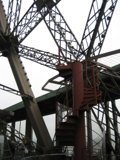
d=0.321
d=0.332
d=0.336
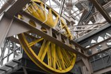
d=0.354
d=0.354
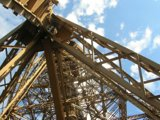
d=0.370
euclidienne
0/8 pertinentes
0/8 pertinentes
d=7.935
d=8.070
d=8.399
d=8.407
d=9.139
d=9.241
d=9.252
d=9.328